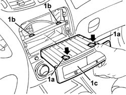

7040A80 COMPARTMENT UNIT ON FACIA R R
- Path
- Procedures > 70 FITTINGS > 7040 BODYSHELL INTERIOR TRIMS AND FITTINGS > 7040A PASSENGER COMPARTMENT TRIM > 7040A80 COMPARTMENT UNIT ON FACIA R R
- Kind
- repair procedure (removal / refitting; the operation number is the code)
- Applies to
- all engines; all production periods
- Interactive page
- https://sloeber94.github.io/elrnDB-aGt/en/#/125001861
Applies to: all engines; all production periods
 Removing
Removing
 Refitting
RefittingOp. 5570T80 CAR RADIO UNIT - R+R
1. Release the retainers (1a) through the slots (1b) and extract the glove compartment (1c).

Applies to: all engines; all production periods
Refitting
RemovingCheck that the glove compartment is undamaged.
Fit the glove compartment and engage the retainers.
Topics linked from this page (1)
Topics that link to this page (10)
- 5040A80 EXPANSION/CONNECTION PIPE - R R
- 5040B30 EXPANSION VALVE (TUBE ORIFICE) - R+R
- 5040C50 AIR CONDITIONER HEATER RADIATOR - R+R
- 5040C64 A/C MANUAL CONTROL SWITCH (ONE) - R+R
- 5040D15 CONTROL UNIT WITH AUTOMATIC DUEL ZONE AIR CONDITIONER KNOBS AND BUTTONS R R
- 5040D76 AIR CONTITIONER DISTRIBUTION FLAP CONTROL MOTOR - R R
- 5040D84 AIR CONDITIONER LEFT HAND AIR MIXER FLAP CONTROL MOTOR - R R
- 5040D86 AIR CONDITIONER RIGHT HAND AIR MIXER FLAP CONTROL MOTOR - R R
- 7040A10 L/H OR R/H FRONT SEAT (ONE) - R+R
- 7040A12 REMOVABLE BOX ON FACIA - ARRANGE